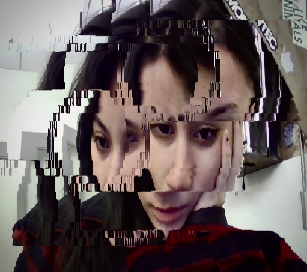

My work focuses on interactive tangible UI/UX and the intersection of humans and machines. Grounded in a careful practice of observation, I pay close attention to how people interact with systems to inform designs that are intuitive. My designs often explores these interactions, questioning how interfaces shape perception, behavior, and our understanding of reality. This practice plays a key role in my process and experimentations, allowing me to identify subtle gestures in everyday interactions. These observations are translated into interactive systems that respond to and reflect on human presence in a nuanced way. Driven by an interest in Human-Machine Interaction, I explore how design can facilitate meaningful and emotionally resonant connections between users and technology. While my toolkit mainly includes experimentation in tangible UI/UX design, fabrication, and the construction of electronic circuits, I'm currently expanding my practice in creating walking sims in virtual environments, video editing archived and personal video content, and live visual performances. My background in graphic design coupled with my current studies in Computation Arts and Philosophy at Concordia University deepen and support my explorations, and provide a solid foundation in the technical and creative aspects of digital art and technology. Through my ongoing practice, I aim to create interactive experiences that invite users to question the evolving relationship between themselves and reality.